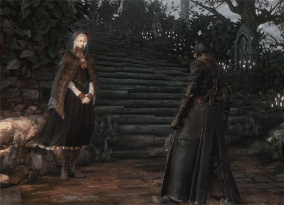
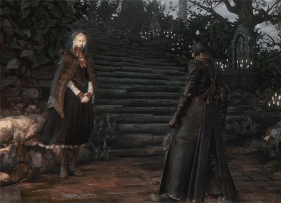
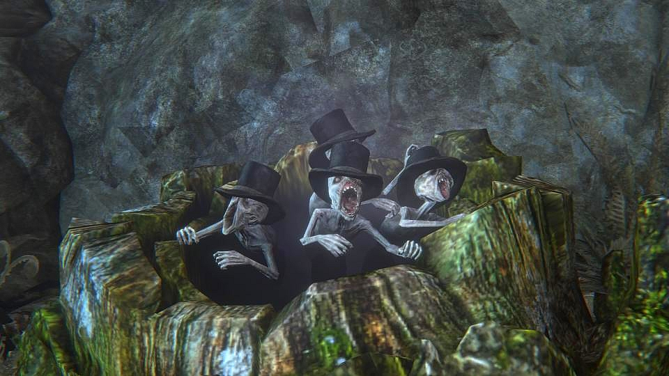
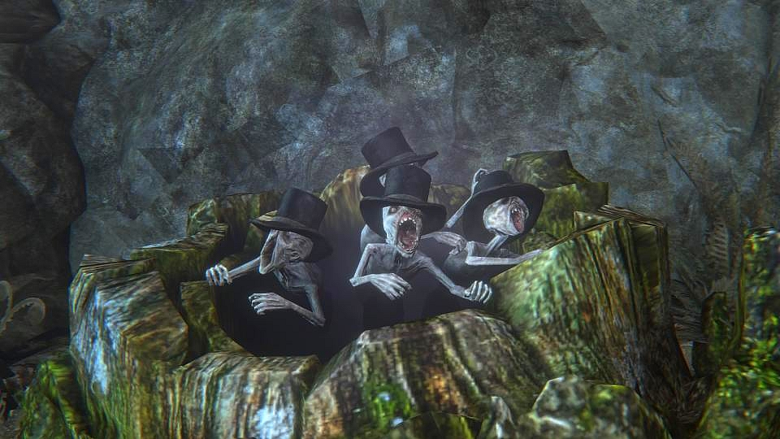

Um refúgio silencioso entre a vida e a morte. No Sonho do Caçador, o caçador repousa, aprimora suas habilidades e se prepara para a próxima caçada. Um espaço onírico e sereno, onde o tempo parece não passar — mas que, no fim, revela sua verdadeira e melancólica natureza.
O Sonho do Caçador é apenas um abrigo, é uma prisão velada sob a forma de consolo. Um lugar moldado pela Presença da Lua para aprisionar caçadores, oferecendo-lhes um simulacro de descanso entre as caçadas. Aqui, a realidade se mistura ao delírio.
Gehrman, o primeiro caçador que repousa neste sonho — ou está preso nele. Apesar de sua aparência frágil e sua voz cansada, ele guarda um longo passado e conhece bem o mundo fora desse universo onírico. Sua ligação com a Presença da Lua o mantém atado ao ciclo interminável da Caçada.
A Boneca é a figura maternal do Sonho. Criada à imagem de alguém que Gehrman amou no passado, ela guia o Caçador, ajuda a canalizar ecos de sangue e oferece ajuda entre as noites sangrentas. Sua voz suave esconde segredos mais profundos do que aparenta.
 

 

Seres pequenos, brancos e inquietantes que emergem do chão em lugares tocados pelo sonho. Servos silenciosos do Caçador, entregam armas, carregam mensagens e observam — sempre observam. Ninguém sabe ao certo de onde vêm... mas eles sempre estiveram lá
Sempre presente no céu, a Presença da Lua vive entre a realidade e do delírio. É ela quem mantém o Sonho do Caçador vivo — uma outra realidade onírica, que aprisionam os caçadores. Embora raramente mencionada, sua influência é absoluta, controlando o destino de todos os caçadores. Aqueles que olham demais para ela costumam perder algo de si, e aqueles que a compreendem... já não são os mesmos.